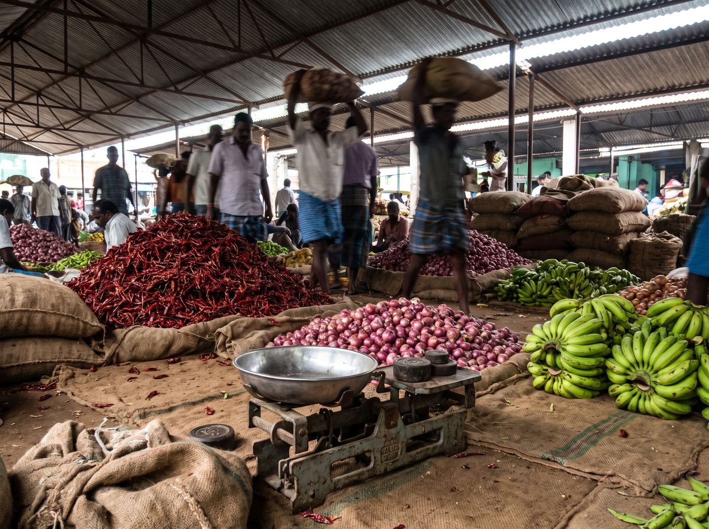
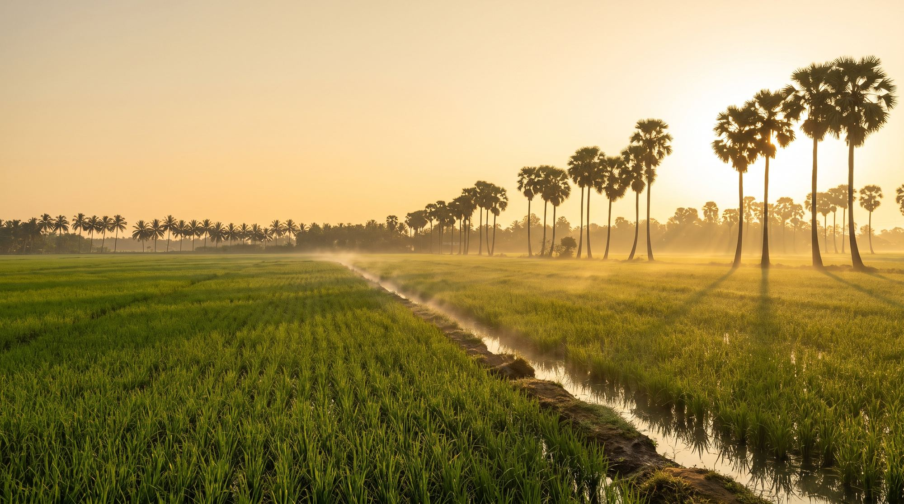
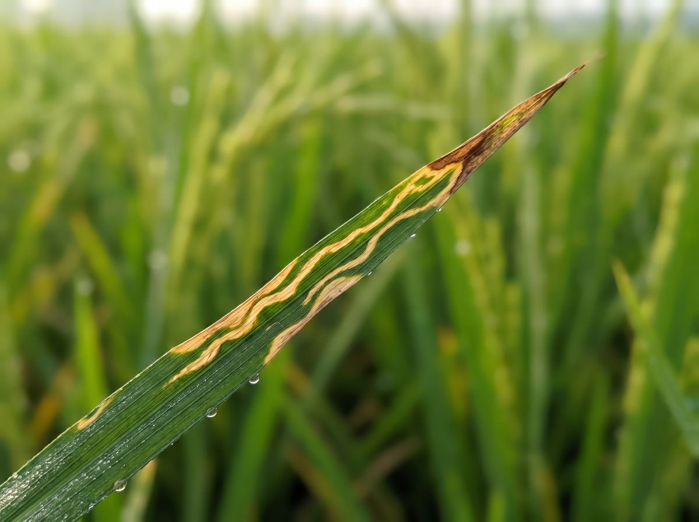
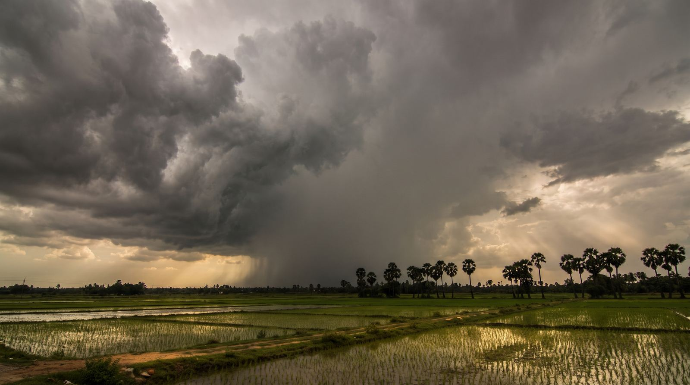
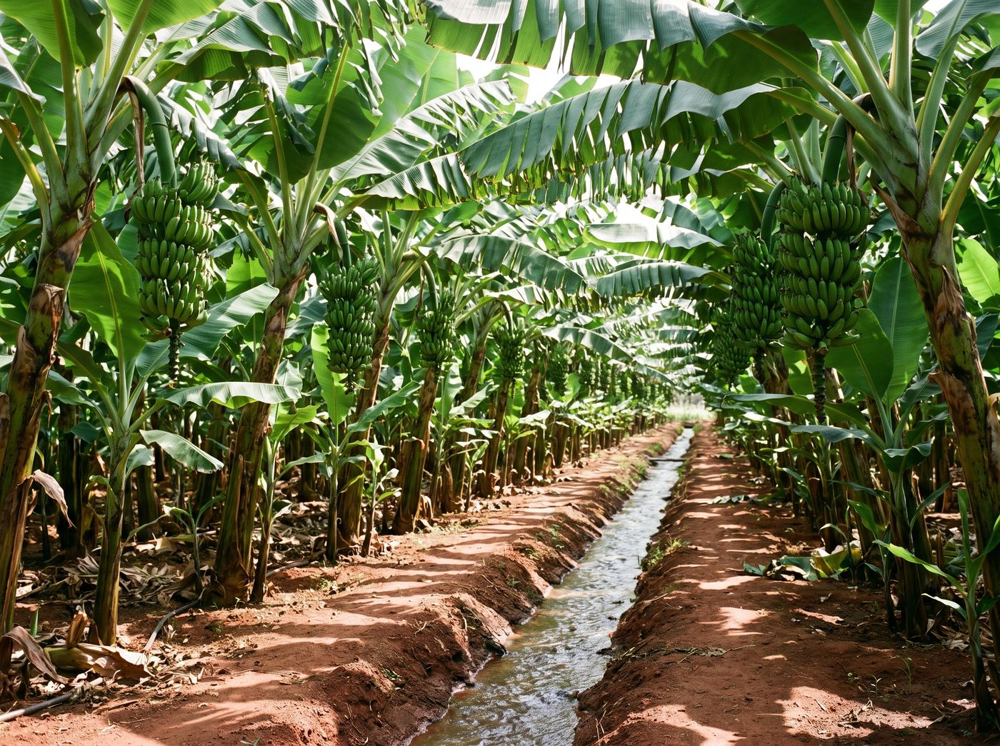
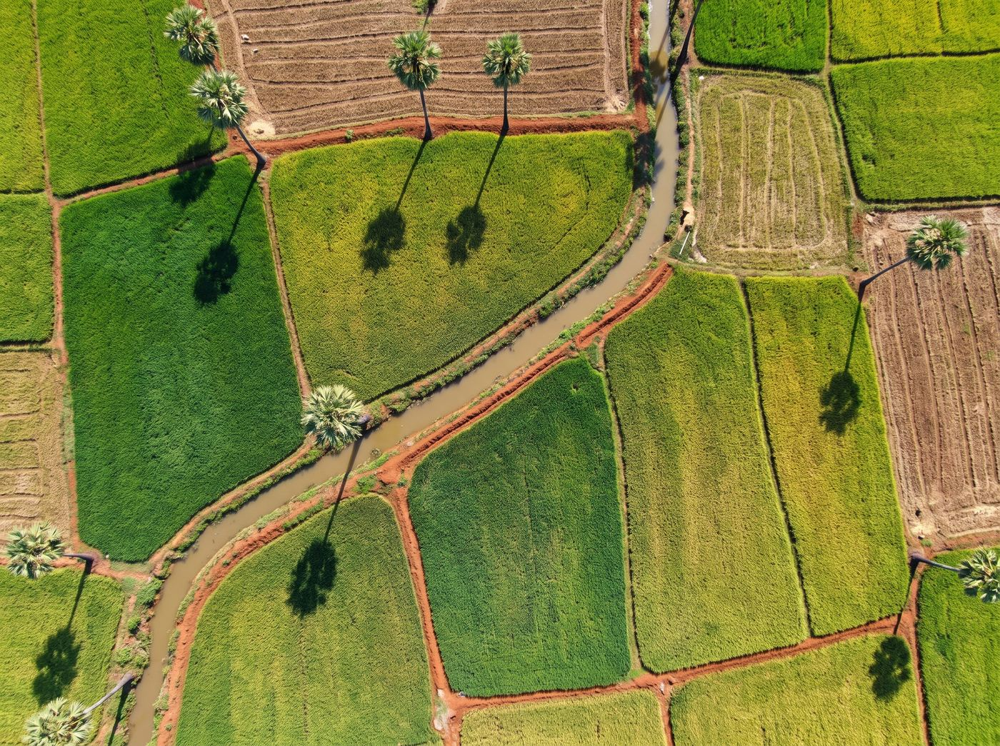
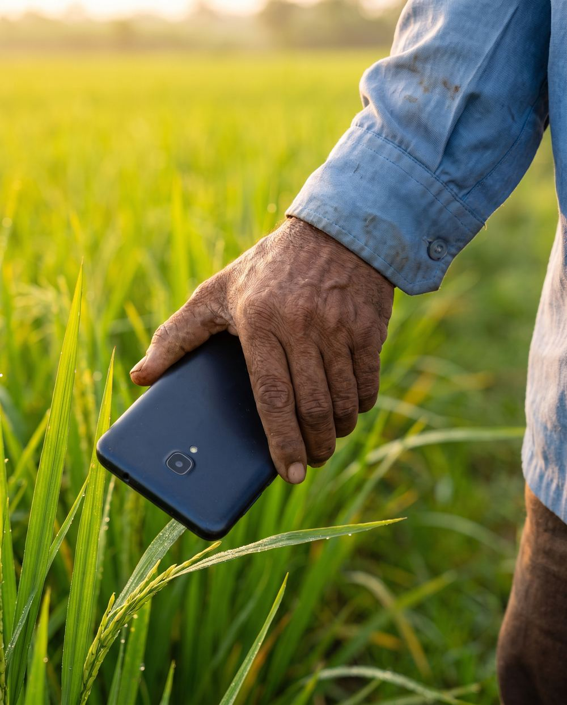
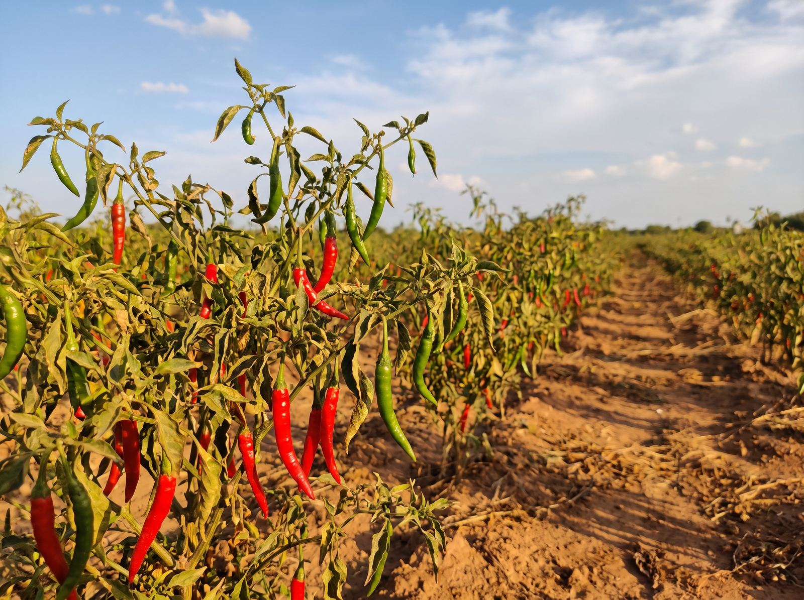

இன்றைய மண்டி விலை
Today's mandi prices
உங்கள் பயிருக்கு அருகிலுள்ள சந்தைகளின் குறைந்த, அதிக, சராசரி விலை. விற்கும் முன் தெரிந்துகொள்ளுங்கள்.
Minimum, maximum and modal prices at markets near you, before you sell.
Agmarknet · data.gov.in

Thoothukudi · Tamil Nadu
பயிர் நோய், மண்டி விலை, உங்கள் கிராம வானிலை, இந்த வாரப் பணிகள் — எல்லாம் ஒரே செயலியில், தமிழில்.
Crop disease, mandi prices, your village's weather and this week's field tasks — in one app, in Tamil.

இலை நுனியிலிருந்து ஓரமாக மஞ்சள் கோடுகள் பரவுகின்றன.
Yellow streaks spreading from the leaf tip along the edge.
நோய் பரிசோதனை
Disease check
நெல், வாழை, மிளகாய், பருத்தி, நிலக்கடலை மற்றும் பல பயிர்களுக்கு. எந்த மருந்தையும் தெளிக்கும் முன் உங்கள் KVK அல்லது வேளாண் அலுவலரிடம் உறுதி செய்யுங்கள்.
Works for paddy, banana, chilli, cotton, groundnut and more. Before spraying anything, confirm with your KVK or agriculture officer.
செயலியில் என்ன இருக்கிறது
In the app

உங்கள் பயிருக்கு அருகிலுள்ள சந்தைகளின் குறைந்த, அதிக, சராசரி விலை. விற்கும் முன் தெரிந்துகொள்ளுங்கள்.
Minimum, maximum and modal prices at markets near you, before you sell.

மழை வருமா? இன்று தெளிக்கலாமா, நீர் பாய்ச்சலாமா? உங்கள் வயலின் இடத்துக்கான நேரடிப் பதில்.
Is rain coming? Is today safe to spray or irrigate? A straight answer for your field's location.

விதைப்பு முதல் அறுவடை வரை, இந்த வாரம் உங்கள் பயிருக்கு என்ன செய்ய வேண்டும் என்று நினைவூட்டும். 15 பயிர்களுக்கு.
From sowing to harvest, a reminder of what your crop needs this week. For 15 crops.

உங்கள் மண் ஆரோக்கிய அட்டையைப் புரிந்துகொள்ளுங்கள். வயலின் எந்தப் பகுதி வாடுகிறது என்று மேலிருந்து பாருங்கள்.
Make sense of your Soil Health Card, and see from above which part of your field is struggling.
தரவு மூலங்கள்
Where the answers come from

வணிகம், கூட்டாண்மை
For business
அடிக்கடி கேட்கப்படுபவை
Questions
AgrowNex தூத்துக்குடியைச் சேர்ந்த AI அடிப்படையிலான வேளாண் தொழில்நுட்ப (agritech) நிறுவனம். இலைப் படத்திலிருந்து பயிர் நோய் கண்டறிதல், அரசு மண்டி விலை, கிராம வானிலை, பயிர் காலண்டர், தமிழில் AI உதவி தரும் செயலியை உருவாக்குகிறது. FPO, KVK-களையும் மொத்த வாங்குபவர்களையும் இணைக்கிறது.
AgrowNex is an AI-based agritech company from Thoothukudi, Tamil Nadu, India. It builds a Tamil-first farming app with AI crop disease detection from a leaf photo, official mandi prices, village weather and spray advice, crop calendars and AI help in Tamil, and connects farmer groups (FPOs, KVKs) with wholesale buyers.
ஆம். விவசாயிகளுக்கு இலவசம். விளம்பரங்களும் இல்லை.
Yes. It is free for farmers, and there are no ads.
ஆம். பெரிய படங்கள், எளிய தமிழ், குரல் மூலம் கேள்வி கேட்கும் வசதி உள்ளன.
Yes. Big pictures, simple Tamil, and you can ask questions by voice.
தெளிவான புகைப்படத்தில் நன்றாக வேலை செய்யும். உறுதியில்லாதபோது மீண்டும் படம் கேட்கும் அல்லது நிபுணரை அணுகச் சொல்லும். மருந்து தெளிக்கும் முன் KVK அல்லது வேளாண் அலுவலரிடம் உறுதி செய்யுங்கள்.
It works best with a clear photo. When it isn't sure, it asks for another photo or tells you to consult an expert. Always confirm with your KVK or agriculture officer before spraying.
இந்திய அரசின் Agmarknet / data.gov.in தரவிலிருந்து மட்டும். நாங்கள் விலைகளை மதிப்பிடவோ உருவாக்கவோ மாட்டோம். ஒவ்வொரு விலையுடனும் தேதி காட்டப்படும்.
Only from the Government of India's Agmarknet / data.gov.in data. We never estimate or make up prices, and every price shows its date.
தரவு மறையாக்கப்பட்ட இணைப்பில் அனுப்பப்படுகிறது. விற்கப்படுவதில்லை. எப்போது வேண்டுமானாலும் கணக்கை மூடலாம். விவரங்கள்: தனியுரிமைக் கொள்கை.
Data travels over encrypted connections and is never sold. You can close your account at any time. Details: privacy policy.
விரைவில். முதலில் பெற கீழே உங்கள் பெயரைப் பதிவு செய்யுங்கள்.
Soon. Leave your name below to get it first.

செயலியைப் பெற
Get the app
AgrowNex விரைவில் Google Play-ல் வருகிறது. உங்கள் பெயரும் கிராமமும் அனுப்புங்கள் — வெளியானதும் முதலில் உங்களுக்குத் தெரிவிப்போம்.
AgrowNex is coming to Google Play soon. Send us your name and village and we'll tell you first when it's out.
பெயர், கிராமம், முக்கியப் பயிர் — மூன்றையும் அனுப்புங்கள்.
Send your name, village and main crop.
முன்பதிவு செய்யுங்கள்Join early accessஉங்கள் விவசாயிகளுடன் சோதனை முயற்சி அல்லது கூட்டாண்மைக்கு.
For a pilot with your farmers, or a partnership.
எங்களைத் தொடர்புகொள்ளுங்கள்Talk to us